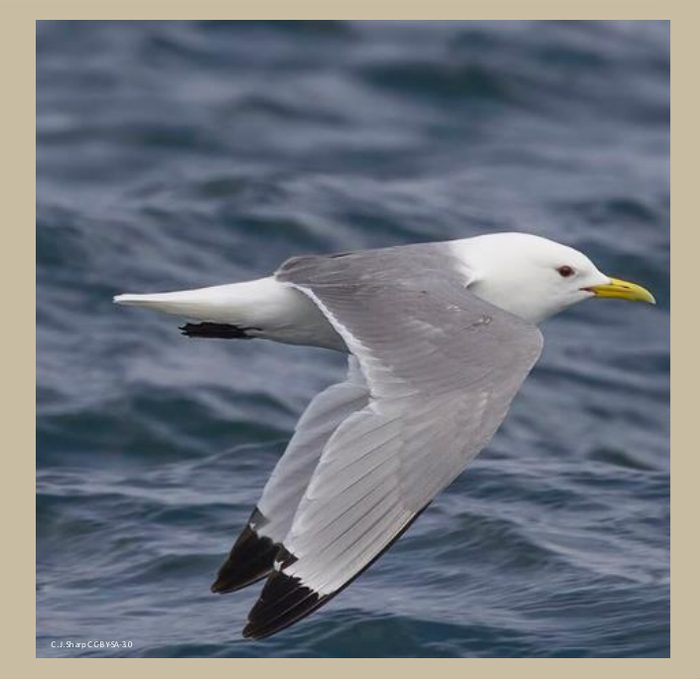
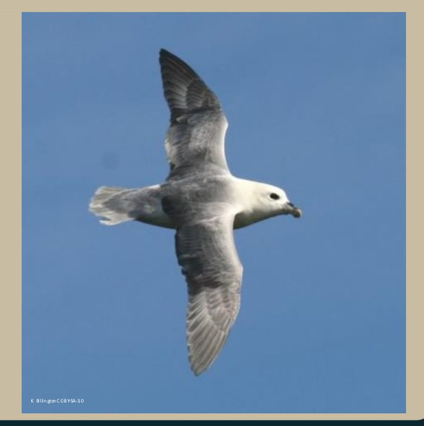
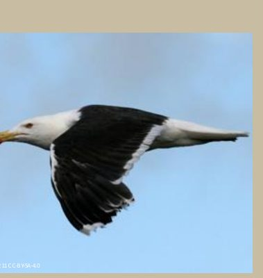
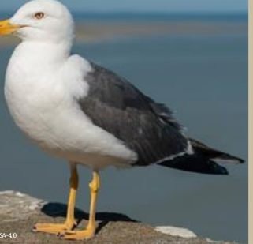
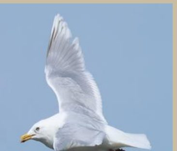
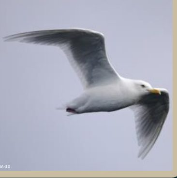
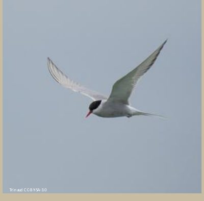
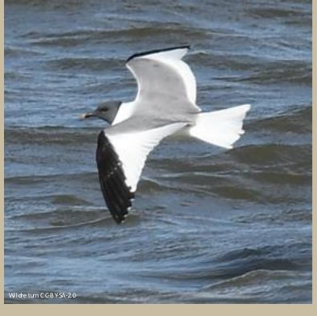
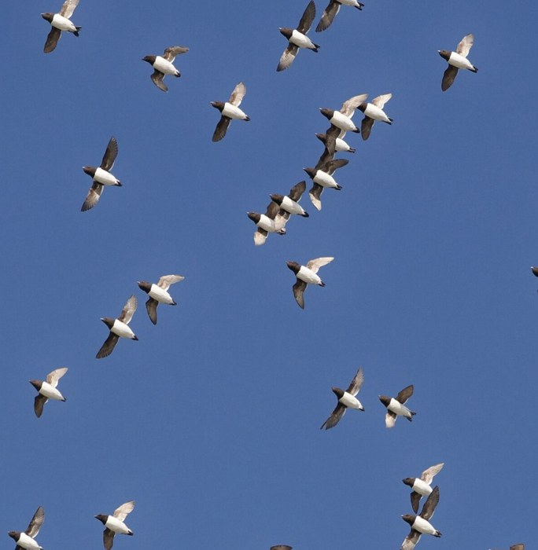
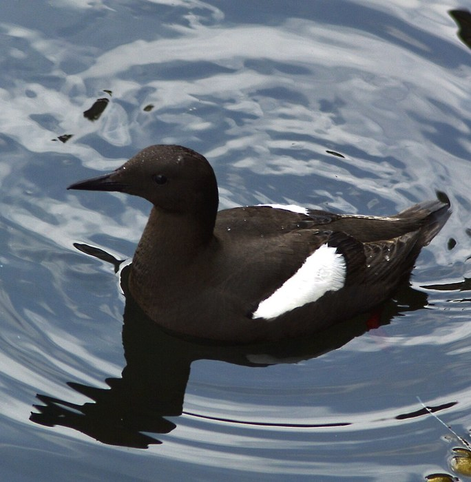
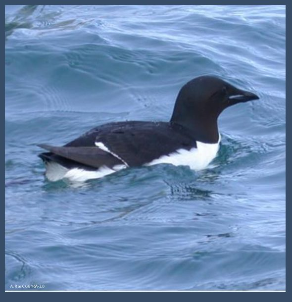
Adapted from the "Common Birds of North-West Greenland — Quick Identification Cheat Sheet" by Julia Schroeder. Bird photo credits as noted above each species; licensed under the stated Creative Commons CC BY-SA terms. Original 4-page PDF.